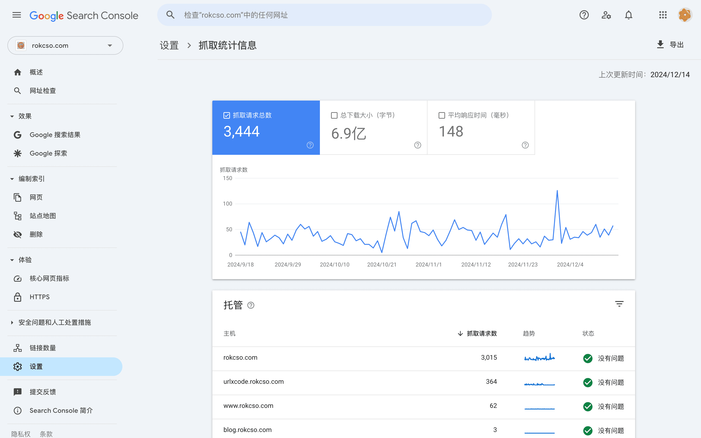

理解搜索引擎的抓取预算
🔄 English
什么是抓取预算
抓取预算（Crawl budget）是指搜索引擎在一定时间范围内对网站进行抓取的页面数量。这个页面可以是用户可见的网页，也可以是网页背后的比如 CSS、HTML 等等文件。
搜索引擎的抓取资源、能力不是无限的（或者说是有成本的），而互联网上每天待抓取的网站数以百万计，所以搜索引擎制定了一个机制来为每个网站设定不同的抓取预算，以合理的控制抓取资源的分配。
当我们的网站有新页面或者页面内容有更新时，如果搜索引擎能够更快的发现这些变化，更早索引这些页面，我们就能更快获益。但是一般来说，大型网站（比如有上万个页面的网站）更需要关注抓取预算。
抓取预算的主要影响因素
抓取预算主要受到抓取限制和抓取需求的影响。
抓取限制
是网站所能承受的安全抓取频率，过高的抓取频率可能会对网站服务造成损害。搜索引擎会非常激进的避免因为它的抓取导致网站服务过载，搜索引擎主要通过一些网站性能指标来判断安全的抓取频率是多少。
如果你的网站请求经常超时、响应慢、频繁的返回错误等都会降低安全频率，而安全频率是基于服务器主机层面进行判断的，所以部署在共享主机上的网站之间也将共享主机的安全频率。
抓取需求
是搜索引擎判断的网站中的内容（URL）被抓取的价值，这主要基于其受欢迎程度和更新频率。比如拥有更多外部入站链接、内部入站链接，或者页面内容经常更新等等。
值得注意的是，不要在页面内容没有发生具有实际重大意义的更新时强制要求搜索引擎爬虫前来重新抓取，搜索引擎爬虫能判断出来这个页面内容的更新是否有意义，最好的做法是专注于优化页面内容，让网页内容变得更丰富、更重要、更有用，自然的召回爬虫来重新抓取。
查看我的网站的抓取预算是多少
在 Google Search Console 中选择一个已经验证所有权的网站，前往「设置」-「抓取」-「抓取统计信息」可以查看该网站被搜索引擎爬虫抓取的情况。
下图是我的博客在 2024-12-17 过去 90 天的被抓取情况：

另外，通过网站的服务器日志也是一种分析搜索引擎爬虫光临网站情况的方式。
如何优化抓取预算
优化网站的抓取预算主要是在避免抓取预算的浪费，就是要避免搜索引擎爬虫抓取那些它抓取之后大概率也不会索引的页面，比如：
- 同一个页面，但是其 URL 带有不同的参数
- 重复或者高度相似的页面
- 低质量的内容
- 加载慢、超时、异常的页面
- 很长的链式重定向页面
- 其他无法被索引的页面（状态码 3xx、4xx、5xx 或明确标识不要索引）
这些页面（URL）在搜索引擎爬虫看来都是不同的 URL，所以它可能会尝试抓取，但是抓取之后发现页面并无不同，就不会重复索引，而这一次抓取就被浪费了。
对于这些我们不希望搜索引擎爬虫抓取的页面，我们可以在 robots.txt 写明，或者在 Google Search Console 中设置。
另外，搜索引擎非常依赖网站地图来发现页面，所以不要在网站地图中包含不可被索引的页面。可以在 Google Search Console 中前往「编制索引」-「网页」然后左上角筛选站点地图过滤器，就可以看到网站地图中所包含的页面的索引情况。

优化网站内部链接非常重要，原则依然是帮助搜索引擎爬虫发现有价值的内容，所以不要追求网站内部链接层次非常分明，而是要让内部链接复杂起来。这个复杂仅仅指内部页面之间可以相互链接，但是整体页面的层次结构要保持扁平。
最近被抓取过的页面在搜索结果中通常拥有更好的排名，所以如果某个页面的受欢迎程度很高，就可以增加更多内部链接链接到这个页面，让这个页面能保持抓取的新鲜度。
抓取预算大致与页面权重（PageRank）成正比，所以优化抓取预算还可以通过增加页面权重来增加抓取预算。